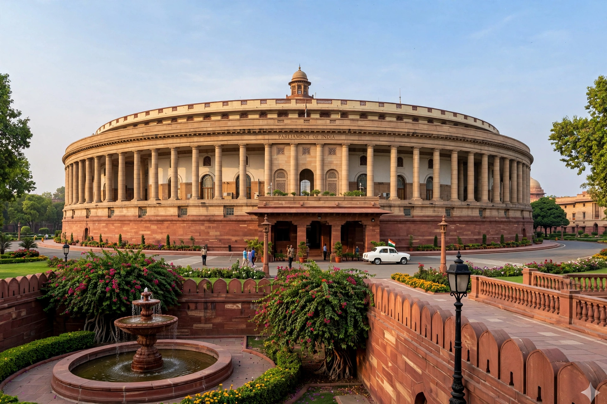

Sansad Bhavan

Sansad Bhavan (Parliament House) in New Delhi is the seat of the Parliament of India, housing the Lok Sabha and the Rajya Sabha. Two buildings have borne this name: the old Parliament House, a circular colonnaded structure inaugurated in 1927, and the new Parliament House inaugurated in 2023 as part of the Central Vista Redevelopment Project.
| Location | Sansad Marg, New Delhi, India |
|---|---|
| Construction started | 1921 |
| Inaugurated | 18 January 1927 |
| Architects | Edwin Lutyens and Herbert Baker |
| Architectural style | Indo-Saracenic / Neoclassical |
| Owner | Government of India |
Old Parliament House
The old building was designed by British architects Edwin Lutyens and Herbert Baker. Its foundation stone was laid in 1921 by Prince Arthur, Duke of Connaught, and it was inaugurated in 1927 by the Viceroy, Lord Irwin, as the Council House, housing the Imperial Legislative Council and the princely Chamber of Princes. After independence it became the home of the Constituent Assembly of India, which adopted the Constitution of India in its Central Hall on 26 November 1949.
The circular building is 174 metres (570 feet) in diameter, surrounded by a colonnade of 144 sandstone columns, and encloses a large garden courtyard. It contains three semicircular chambers arranged around the Central Hall. After the new building opened, the old structure was renamed Samvidhan Sadan (Constitution House) and is used for parliamentary committee rooms, offices and events.
New Parliament House
The new Parliament House, inaugurated by Prime Minister Narendra Modi on 28 May 2023, is a triangular four-storey building adjacent to the old one, designed by architect Bimal Patel of HCP Design. Its triangular plan echoes the sacred geometry of the site and the plot shape. The Lok Sabha chamber, themed on the peacock, seats 888 members; the Rajya Sabha chamber, themed on the lotus, seats 384. A central Constitution Hall displays a copy of the original Constitution.
The inauguration included the ceremonial installation of the Sengol, a gold-plated sceptre, near the Speaker's chair. The building features galleries displaying Indian art and craft from across the states, and is designed to be earthquake-resistant and more energy-efficient than its predecessor.